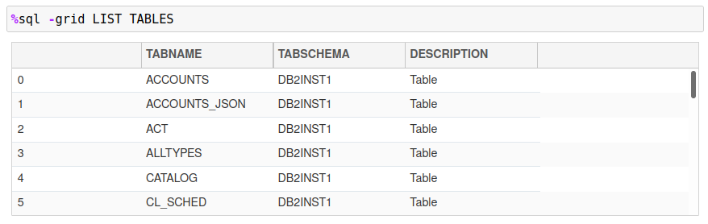
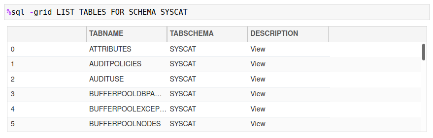
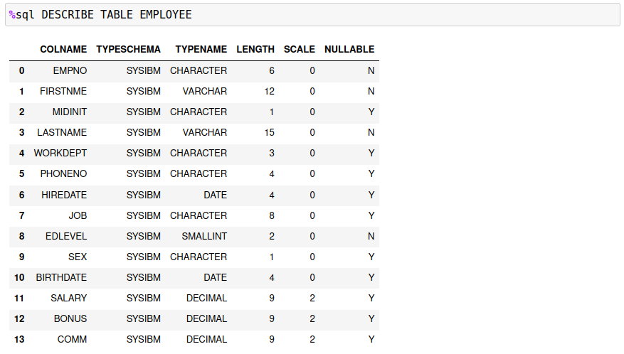
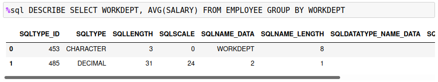

Predefined SQL Macros
There are four %sql commands that are implemented as macros. These commands are:
SAMPLEDATALIST TABLESDESCRIBESET <option> <value>
These commands would be used in the same way that SQL statement are executed, either in a %sql or %%sql block.
Sample Data
Many of the examples that are used when learning Db2 revolve around the use of the EMPLOYEE and DEPARTMENT tables. Normally these tables would be created as part of the SAMPLE database. If you have direct access to the Db2 database, you can create the SAMPLE database with the following command. Note that you must be connected to the Db2 Instance and have a terminal (command line) window open.
db2sampl -sql -xml
There are additional options available for the db2sampl command in the Db2 documentation.
If you are using another database, or do not have access to the db2sampl command, this macro will generate the EMPLOYEE and DEPARTMENT tables. The SAMPLE database contains many more tables, but these two form the basis for many SQL examples. To create these tables under your currently connected userid, issue the following command:
%sql SAMPLEDATA
This command will generate the two demonstration tables under the current schema. Note that if the EMPLOYEE or DEPARTMENT table are found, they will not be replaced or refreshed. This is to avoid over-writing tables that may have been generated with the db2sampl command.
List Tables
The LIST TABLES command is useful when you are searching for the tables within in your database. The syntax for this command is:
%sql LIST TABLES [FOR SCHEMA schema]
Issuing the LIST TABLES without any arguments will produce a list of tables for the current schema.

If the FOR SCHEMA schema option is supplied, all tables for that schema will be displayed.

Describe a Table
The DESCRIBE command will display the name, data type, length, scale, and nullability for all columns in a table. The syntax for the DESCRIBE command is:
%sql DESCRIBE [TABLE table] | [SELECT statement]
The simplest form of the command lists the columns of a table as shown in the example below.

The command is also useful when trying to determine the data types of an SQL statement. The following example illustrates how a calculation in a select list is returned in the answer set.

There is more detailed information displayed when you describe a SELECT statement.
Set OPTIONS
The SET command can be used to set any of the Db2 magic options:
SET MAXROWS valueSET MAXGRID valueSET THREADS valueSET DISPLAY value
These commands can also be set using the OPTION keyword:
OPTION MAXROWS value
You can use either form of the command. The SET command is what has been typically used for changing Db2 settings, so this aligns that practice.